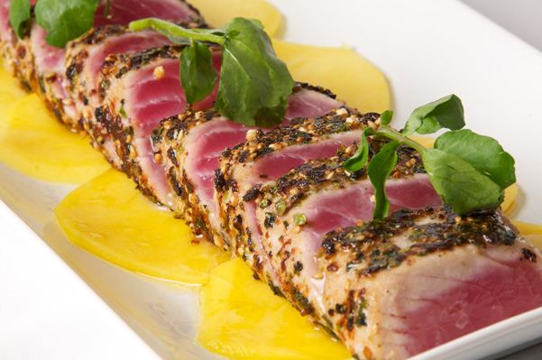

Red Tuna Carpaccio

Lime juice, capers, and red onion turn slices of tuna into something spectacular. This tuna carpaccio makes a great appetizer or light lunch.
Ingredients :
- 2 tablespoons capers
- 4 tablespoons rosé wine
- 1 long fresh red chili
- 200g red tuna
- fresh basil
- 1 clove of garlic
- extra virgin olive oil
Steps :
- Place the capers into a small bowl, cover with the rosé, then leave to soak for 10 minutes or so.
- Meanwhile, hold the chilli over a direct flame on the hob (or place under the grill) for around 5 minutes, or until blackened and blistered all over, turning occasionally. Transfer to a bowl, cover with cling film and leave to cool for around 10 minutes.
- Meanwhile, using a long sharp knife, slice off and discard the veiny stub of meat from the tuna, then thinly slice against the grain. Place on a plate and squeeze over the juice from half the lemon – the acidity will start to cook the fish.
- Pick and finely chop the basil, finely chop the dill fronds, then peel and finely chop the garlic. Drain and finely chop the capers, then add the chopped ingredients to a bowl with 2 tablespoons of extra virgin olive oil. Scrape off and discard the blackened skin from the cooled chilli. Halve, deseed and finely chop most of it, then add the chopped chilli to the bowl, reserving the rest to one side. Stir well to combine.
- Arrange the tuna on a clean serving platter, drizzle with a little extra virgin olive oil, then spoon over the herb paste. Finely slice the reserved chilli lengthways and arrange on top, then serve with dressed rocket and lemon wedges for squeezing over.